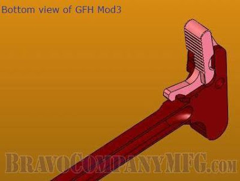
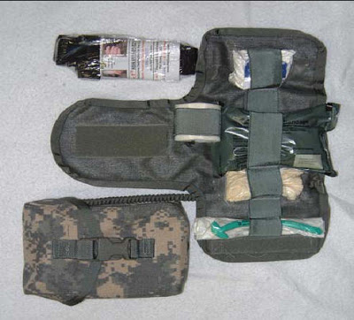
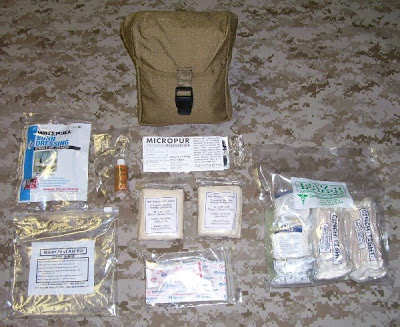
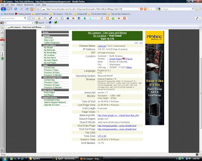
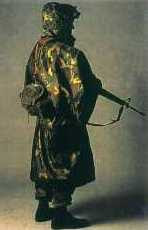
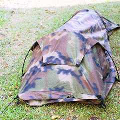

Saturday, July 31, 2010
They're catching on. Investor's Business Daily asks: "Will Washington's Failures Lead To Second American Revolution?"

Good question. Although I prefer to think of it as the Great Restoration.
Will Washington's Failures Lead To Second American Revolution?
By ERNEST S. CHRISTIAN AND GARY A ROBBINS Posted 07/30/2010 06:30 PM ET
The Internet is a large-scale version of the "Committees of Correspondence" that led to the first American Revolution — and with Washington's failings now so obvious and awful, it may lead to another.
People are asking, "Is the government doing us more harm than good? Should we change what it does and the way it does it?"
Pruning the power of government begins with the imperial presidency.
Too many overreaching laws give the president too much discretion to make too many open-ended rules controlling too many aspects of our lives. There's no end to the harm an out-of-control president can do.
Bill Clinton lowered the culture, moral tone and strength of the nation — and left America vulnerable to attack. When it came, George W. Bush stood up for America, albeit sometimes clumsily.
Barack Obama, however, has pulled off the ultimate switcheroo: He's diminishing America from within — so far, successfully.
He may soon bankrupt us and replace our big merit-based capitalist economy with a small government-directed one of his own design.
He is undermining our constitutional traditions: The rule of law and our Anglo-Saxon concepts of private property hang in the balance. Obama may be the most "consequential" president ever.
The Wall Street Journal's steadfast Dorothy Rabinowitz wrote that Barack Obama is "an alien in the White House."
His bullying and offenses against the economy and job creation are so outrageous that CEOs in the Business Roundtable finally mustered the courage to call him "anti-business." Veteran Democrat Sen. Max Baucus blurted out that Obama is engineering the biggest government-forced "redistribution of income" in history.
Fear and uncertainty stalk the land. Fed Chairman Ben Bernanke says America's financial future is "unusually uncertain."
A Wall Street "fear gauge" based on predicted market volatility is flashing long-term panic. New data on the federal budget confirm that record-setting deficits in the $1.4 trillion range are now endemic.
Obama is building an imperium of public debt and crushing taxes, contrary to George Washington's wise farewell admonition: "cherish public credit ... use it as sparingly as possible ... avoiding likewise the accumulation of debt ... bear in mind, that towards the payment of debts there must be Revenue, that to have Revenue there must be taxes; that no taxes can be devised, which are not ... inconvenient and unpleasant ... ."
Opinion polls suggest that in the November mid-term elections, voters will replace the present Democratic majority in Congress with opposition Republicans — but that will not necessarily stop Obama.
A President Obama intent on achieving his transformative goals despite the disagreement of the American people has powerful weapons within reach. In one hand, he will have a veto pen to stop a new Republican Congress from repealing ObamaCare and the Dodd-Frank takeover of banks.
In the other, he will have a fistful of executive orders, regulations and Obama-made fiats that have the force of law.
Under ObamaCare, he can issue new rules and regulations so insidiously powerful in their effect that higher-priced, lower-quality and rationed health care will quickly become ingrained, leaving a permanent stain.
Under Dodd-Frank, he and his agents will control all credit and financial transactions, rewarding friends and punishing opponents, discriminating on the basis of race, gender and political affiliation. Credit and liquidity may be choked by bureaucracy and politics — and the economy will suffer.
He and the EPA may try to impose by "regulatory" fiats many parts of the cap-and-trade and other climate legislation that failed in the Congress.
And by executive orders and the in terrorem effect of an industry-wide "boot on the neck" policy, he can continue to diminish energy production in the United States.
By the trick of letting current-law tax rates "expire," he can impose a $3.5 trillion 10-year tax increase that damages job-creating capital investment in an economy struggling to recover. And by failing to enforce the law and leaving America's borders open, he can continue to repopulate America with unfortunate illegals whose skill and education levels are low and whose political attitudes are often not congenial to American-style democracy.
A wounded rampaging president can do much damage — and, like Caesar, the evil he does will live long after he leaves office, whenever that may be.
The overgrown, un-pruned power of the presidency to reward, punish and intimidate may now be so overwhelming that his re-election in 2012 is already assured — Chicago-style.
• Christian, an attorney, was a deputy assistant secretary of the Treasury in the Ford administration.
• Robbins, an economist, served at the Treasury Department in the Reagan administration.
"But that will not necessarily stop Obama." Right. Collectivist revolutionaries can only be stopped by countervailing force.
Got militia?

As American as apple pie and baseball. Well, maybe apple pie.
"A Citi Field security guard tries to tackle a young man carrying a Mexican flag who ran onto the field in the seventh inning of the New York Mets vs the Arizona Diamondbacks baseball game at Citi Field in New York, Friday, July 30, 2010."
Perhaps we should open games now with the Mexican National Anthem. Here it is, with lyrics, so y'all can practice singing it after Reconquista.
Coro (Chorus):
Mexicanos, al grito de guerra
el acero aprestad y el bridón.
Y retiemble en sus centros la Tierra,
al sonoro rugir del cañón.
¡Y retiemble en sus centros la Tierra,
al sonoro rugir del cañón!
Mexicans, at the cry of war,
make ready the steel and the bridle,
and the earth trembles at its centers
at the resounding roar of the cannon.
and the earth trembles at its centers
at the resounding roar of the cannon!
Estrofa I (First Stanza):
Ciña ¡oh Patria! tus sienes de oliva
de la paz el arcángel divino,
que en el cielo tu eterno destino
por el dedo de Dios se escribió.
Mas si osare un extraño enemigo
profanar con su planta tu suelo,
piensa ¡oh Patria querida! que el cielo
un soldado en cada hijo te dio.
Let gird, oh Fatherland, your brow with olive
by the divine archangel of peace,
for in heaven your eternal destiny
was written by the finger of God.
But if some enemy outlander should dare
to profane your ground with his step,
think, oh beloved Fatherland, that heaven
has given you a soldier in every son.
¡Guerra, guerra sin tregua al que intente
De la patria manchar los blasones!
¡Guerra, guerra! Los patrios pendones
En las olas de sangre empapad.
¡Guerra, guerra! En el monte, en el valle
Los cañones horrísonos truenen,
Y los ecos sonoros resuenen
Con las voces de ¡Unión! ¡Libertad!
War, war without quarter to any who dare
to tarnish the coat of arms!
War, war! Let the national banners
be soaked in waves of blood.
War, war! In the mountain, in the valley,
let the cannons thunder in horrid unison
and may the sonorous echoes resound
with cries of Union! Liberty!
Antes, patria, que inermes tus hijos
Bajo el yugo su cuello dobleguen,
Tus campiñas con sangre se rieguen,
Sobre sangre se estampe su pie.
Y tus templos, palacios y torres
Se derrumben con hórrido estruendo,
Y sus ruinas existan diciendo:
De mil héroes la patria aquí fue.
O, Motherland, ere your children, defenseless
bend their neck beneath the yoke,
may your fields be watered with blood,
may their foot be printed in blood.
And may your temples, palaces and towers
collapse with horrid clamor,
and may their ruins continue on, saying:
Of one thousand heroes, here the Motherland began.
¡Patria! ¡Patria! Tus hijos te juran
Exhalar en tus aras su aliento,
Si el clarín con su bélico acento
los convoca a lidiar con valor.
¡Para ti las guirnaldas de oliva!
¡Un recuerdo para ellos de gloria!
¡Un laurel para ti de victoria!
¡Un sepulcro para ellos de honor!
Motherland! Motherland! your children swear to you
to breathe their last for your sake,
if the bugle with its warlike accent
persuades them to battle with courage.
For you, olive wreathes!
A memory for them of glory!
For you, a laurel of victory!
A tomb for them of honor!
Men run into outfield carrying Mexican flags
(AP) – 4 hours ago
NEW YORK — Two men carrying Mexican flags ran into the outfield during the seventh inning of the New York Mets' game against the Arizona Diamondbacks on Friday night at Citi Field.
The men were apprehended by security fairly quickly without much incident.
Before the game, about 40 demonstrators across the street from the ballpark protested Arizona's immigration law, chanting "Oppose racism!" and "Boycott Arizona!"
Others stationed closer to the subway exit handed out leaflets that requested Major League Baseball move next year's All-Star game out of Phoenix.
"It's not going to distract me. I'm here to play baseball," Diamondbacks interim manager Kirk Gibson said after his team's 9-6 victory over the Mets. "You have an opinion, I have an opinion. They have the right to say what they want, but it's no distraction."
Perhaps we should open games now with the Mexican National Anthem. Here it is, with lyrics, so y'all can practice singing it after Reconquista.
Coro (Chorus):
Mexicanos, al grito de guerra
el acero aprestad y el bridón.
Y retiemble en sus centros la Tierra,
al sonoro rugir del cañón.
¡Y retiemble en sus centros la Tierra,
al sonoro rugir del cañón!
Mexicans, at the cry of war,
make ready the steel and the bridle,
and the earth trembles at its centers
at the resounding roar of the cannon.
and the earth trembles at its centers
at the resounding roar of the cannon!
Estrofa I (First Stanza):
Ciña ¡oh Patria! tus sienes de oliva
de la paz el arcángel divino,
que en el cielo tu eterno destino
por el dedo de Dios se escribió.
Mas si osare un extraño enemigo
profanar con su planta tu suelo,
piensa ¡oh Patria querida! que el cielo
un soldado en cada hijo te dio.
Let gird, oh Fatherland, your brow with olive
by the divine archangel of peace,
for in heaven your eternal destiny
was written by the finger of God.
But if some enemy outlander should dare
to profane your ground with his step,
think, oh beloved Fatherland, that heaven
has given you a soldier in every son.
¡Guerra, guerra sin tregua al que intente
De la patria manchar los blasones!
¡Guerra, guerra! Los patrios pendones
En las olas de sangre empapad.
¡Guerra, guerra! En el monte, en el valle
Los cañones horrísonos truenen,
Y los ecos sonoros resuenen
Con las voces de ¡Unión! ¡Libertad!
War, war without quarter to any who dare
to tarnish the coat of arms!
War, war! Let the national banners
be soaked in waves of blood.
War, war! In the mountain, in the valley,
let the cannons thunder in horrid unison
and may the sonorous echoes resound
with cries of Union! Liberty!
Antes, patria, que inermes tus hijos
Bajo el yugo su cuello dobleguen,
Tus campiñas con sangre se rieguen,
Sobre sangre se estampe su pie.
Y tus templos, palacios y torres
Se derrumben con hórrido estruendo,
Y sus ruinas existan diciendo:
De mil héroes la patria aquí fue.
O, Motherland, ere your children, defenseless
bend their neck beneath the yoke,
may your fields be watered with blood,
may their foot be printed in blood.
And may your temples, palaces and towers
collapse with horrid clamor,
and may their ruins continue on, saying:
Of one thousand heroes, here the Motherland began.
¡Patria! ¡Patria! Tus hijos te juran
Exhalar en tus aras su aliento,
Si el clarín con su bélico acento
los convoca a lidiar con valor.
¡Para ti las guirnaldas de oliva!
¡Un recuerdo para ellos de gloria!
¡Un laurel para ti de victoria!
¡Un sepulcro para ellos de honor!
Motherland! Motherland! your children swear to you
to breathe their last for your sake,
if the bugle with its warlike accent
persuades them to battle with courage.
For you, olive wreathes!
A memory for them of glory!
For you, a laurel of victory!
A tomb for them of honor!
Remember how Edward R. Murrow broadcasted from London at the height of the Blitz while German bombs fell all around him?
Channeling Uday Hussein: The latest from the sad little land ruled by a collectivist interstellar cockroach.
The late and unlamented Uday Hussein, taken out by Task Force 20 and the 101st Airborne Division, now burning brightly in hell.
North Korean soccer purge. Of course there's no mention of this on the official DPRK news website.
This is what happens in collectivist dictatorships. Remember when Uday Hussein ran the Iraqi national soccer team and international soccer officials denied that torture was happening?
As head of the Iraqi Olympic Committee, Uday oversaw the imprisonment and torture of Iraqi athletes who were deemed not to have performed to expectations. According to widespread reports, torturers beat and caned the soles of the football players' feet — inflicting intense pain without leaving visible marks on the rest of their bodies. Uday reportedly kept scorecards with written instructions on how many times each player should be beaten after a poor showing. He would insult athletes who performed below his expectations by calling them dogs and monkeys — major insults in the Arab world — to their faces. One defector reported that jailed football players were forced to kick a concrete ball after failing to reach the 1994 FIFA World Cup finals. Iraqi National Football team were seen with their heads shaved after failing to achieve a good result in a tournament in 1980s. It was widely circulated that Uday ordered the shaving as part of the punishment. Another defector claimed that athletes were dragged through a gravel pit and subsequently immersed in a sewage tank to induce infection in the victims' wounds. After Iraq lost 1:4 to Japan in quarterfinals of the 2000 AFC Asian Cup in Lebanon, goalkeeper Hashim Hassan, defender Abdul Jaber and forward Qahtan Chatir were labelled as guilty of loss and eventually flogged for three days by Uday's security. -- Wikipedia.
North Korean soccer purge. Of course there's no mention of this on the official DPRK news website.
This is what happens in collectivist dictatorships. Remember when Uday Hussein ran the Iraqi national soccer team and international soccer officials denied that torture was happening?
North Korean football team shamed in six-hour public inquiry over World Cup
North Korea's football team has been shamed in a six-hour public inquisition and the team's coach has been accused of "betraying" the reclusive leader's heir apparent following their failure at the World Cup, according to reports.
By Barney Henderson
London Telegraph
Published: 12:15PM BST 30 Jul 2010
The entire squad was forced onto a stage at the People's Palace of Culture and subjected to criticism from Pak Myong-chol, the sports minister, as 400 government officials, students and journalists watched.
The players were subjected to a "grand debate" on July 2 because they failed in their "ideological struggle" to succeed in South Africa, Radio Free Asia and South Korean media reported.
The team's coach, Kim Jong-hun, was reportedly forced to become a builder and has been expelled from the Workers' Party of Korea.
The coach was punished for "betraying" Kim Jong-un - one of Supreme Leader Kim Jong-il's sons and heir apparent.
The country, in its first World Cup since 1966, lost all three group games – including a 7-0 defeat to Portugal.
The broadcast of live games had been banned to avoid national embarrassment, but after the spirited 2-1 defeat to Brazil, state television made the Portugal game its first live sports broadcast ever.
Following ideological criticism, the players were then allegedly forced to blame the coach for their defeats.
Only two players avoided the inquisition - Japanese-born Jong Tae-se and An Yong-hak, who flew straight to Japan after the tournament.
However, media in South Korea said the players got off lightly by North Korean standards.
"In the past, North Korean athletes and coaches who performed badly were sent to prison camps," a South Korean intelligence source told the Chosun Ilbo newspaper.
Good deal for Hirtenberger 7.62 NATO on MG links at AIM -- and the really stupid way they show to delink it.
My good friend Ranger Rick sends this link to Hirtenberger 7.62 NATO available at AIM Surplus. From the description at the website:
This is a very special opportunity to purchase some of the world's Best .308 Ammo Below Market Pricing!
This is 1980's Austrian manufactured Hirtenberger .308 (7.62x51). It features a brass case and a 147grn full bi-metal jacketed lead core bullet. It is packed 4rds on a M60 link, 200rds in a resealable .30cal ammo can. We are offering and pricing this ammunition as non-corrosive Berdan primed. However, a substantial quantity is single flash hole boxer primed reloadable. (We are not sorting this ammo, so expect Berdan, but celebrate if you get some Boxer.) While supplies last.
The links on this ammunition are sought after M-60 NATO marked links. also used in the Mini-Gun, HK21, MG3, etc. It is easily removed from the links and offers convenient storage in the resealable .30cal ammo can with gasket.
Is it really easy to remove from the links? You decide...
Then they have a short video showing you how "easy" it is. Easy? Yes. But, the only thing is, you should NEVER delink ammo by pushing the bullet end against a hard surface as they present. Reverse the process and push against the BASE of the round, grasping the front of the CASE after you have moved the round's cannelure forward out of the retainer clip on the link (I prefer using a hardwood board rather than a steel table top for this so the base is not deformed). Is this harder and slower than the method shown? Sure. But pushing on the bullet end can drive the bullet back into the case or cant it. When you're in a hurry, you probably won't even notice it. This is a badness thing.
Now, 80s Hirtenberger is the single best ammo I have ever fired in my China Doll. The Austrian firm has been in the ammunition business for 150 years -- since 1860 -- and it has always maintained a high standard of quality control. In fact, after I scored a case of it and put it back in the early years of the first decade of the 21st Century, I labeled it "MATCH" on the crate. It was that good.
Now, that was new factory production in 20 round boxes, not machine gun ammo on links. Machine gun ammo is often of lesser quality control standards than rifle ammo, but if I were guessing, I'd say Hirtenberger MG ammo is still going to be close to top hole.
$450 for a thousand rounds is a great price these days, especially packed in 5 (these days hard-to-obtain-at-a-decent-price) M19A1 type ammo cans. Just do me a couple of favors.
First, after you delink it, please repack it -- if not in stripper clips and bandoleers then at least in cardboard boxes you can scrounge from a range barrel -- and then reload the ammo cans with the packaged ammo. Loose ammo in a can is NOT tactical.
Second, PLEASE do not delink it as the AIM video illustrates.
Nuff said.
Friday, July 30, 2010
Praxis: The BCM Gunfighter Charging Handle for AR15/M4/M16
OK, folks, will anybody who has ever had problems with their Eugene-Stoner-designed Mouse Gun charging handle please raise their hand? (Mine's up.) The solution below is a little pricey (Fifty bucks per) but does provide a solution to the most common problem.
Meet the Bravo Company Manufacturing BCMGUNFIGHTER Charging Handle. From the factory description:
When the AR15 system was first introduced to and fielded by the US Military in the 1960s, the manual of arms for an infantryman was significantly different than what currently exists today. To charge the rifle the shooter released their hand from a firing grip, grabbed each side of the charging handle with the thumb and forefinger or the first two fingers , (while applying pressure to the latch) pulled the charging handle all the way to the rear, and then released it to charge the weapon.
Like everything else in the last 45 years, tactics and weaponry have undergone a continuous evolution. Red dot optics get the shooter on target quicker, shorter barrels allow the operator to more quickly negotiate tighter urban areas, and operator's manipulations of the weapon system have become much more efficient and faster. The current manual of arms has the operator maintaining a firing grip almost continuously while manipulating the weapon with the non-dominant hand in an effort to more quickly get the weapon ready to fire. With that premise, most weapon manipulations are done only with the shooter's support hand; to include operating the charging handle.
In order to perform an immediate action or charge the carbine, current CQB techniques have the operator racking the charging handle to the rear using their support side hand only. This is done in one swift and strong movement. With the operator's firing grip maintained, the weapon again has a loaded chamber, and the shooter can immediately bring a hot weapon back into the fight.
The current use of extended tactical latches has made this movement much more efficient. The only drawback to this type of manipulation is all the force used to rack the charging handle rearward goes into the extended tactical latch and is then transferred into the roll pin. With this scenario, the entire operation becomes contingent on the sheer strength of this tiny 1/16th roll pin, and its' ability to take continuing blows. Repeated and forceful support hand only racking of the charging handle eventually can lead to breaking the roll pin and loosing the latch completely. With the latch blown out, the charging handle will not stay secured to the receiver as the bolt is moving back and forth during each cycle of the weapon's action. Not a good situation on a two way range. . .
The BCMGUNFIGHTER Charging Handle and extended latches feature internal redesigns to direct the force off of the roll pin and into the body of the charging handle during support hand only manipulations. This new design has a built in backstop engineered into the extended latch and into the charging handle. As the latch is opened up, its' travel is limited by these flat surface backstops. With this travel limiting feature, the stress is taken off the roll pin, and is now redirected into the entire body of the charging handle.
The BCMGUNFIGHTER Charging Handle offers two significant advantages.
1. Since the tiny roll pin is no longer the weak point - it is an stronger system and tactical latch will stay intact even under repeated support side only manipulation.
2. With the force kept inside the body of the handle, when the handle is pulled directly to the rear, it moves directly to the rear and does not angle off to the outboard side. A much smoother operation.
On the cutaway computer drawings you can see the inside machining of the latch. It shows the 3 inside contact surfaces. (The 2 semi circular cuts are to aid in the removal of dirt and debris that can get inside the handle.)

On the bottom view you can see the outside of the latch itself. It is actually as thick as the handle. This provides 2 additional contact surfaces to insure the force is maintained inside the handle and offers the operator more contact surface to manipulate the handle.
Manufacturer Suggested Retail Pricing $47.95
How to train -- hard.
Khazak military prepares for bus fare increase.
The comments at GearScout accompanying this video:
The comments at GearScout accompanying this video:
Here’s a video showing how to train. Hard. The unit doesn’t appear to flinch after a little drama is added to their training display.
It’s clearly a show, but are the Kazaks trying to kill or capture the occupants of that bus? More importantly, who measured the line charge being used by the assaulter and what Gulag did they send him to?
Forget the birth certificate, the burning question of the media day for Obama now is: "Do you, or do you not, know who Snooki is?"
I kid you not. Heck, I still don't know who Snooki is after reading a couple of stories about how she voted for John McCain and is upset about the tax on white people's tanning sessions. I'm not sure I want to know.
Praxis: Camp-Dry, the militiaman's friend.
So, I was chatting with the Trainer about gear and other things the other day, and he mentioned that his boys have "Camp Dry Parties." They get together and spray down all gear with Kiwi Camp Dry Heavy Duty Water Repellent -- vests, combat harnesses, pouches, packs, stuff sacks, you name it. Of course boots have their own sealants and BDUs should be porous and breathable, but everything else gets soaked with Camp Dry.
The gear thus treated needs to air dry and, since the curing process makes it stink for about a week, he recommends you hang it in the garage in the interest of the preservation of domestic tranquility. (When momma ain't happy, NOBODY'S happy.)
Camp Dry is found just about everywhere, from WalMart to sporting goods stores.
Praxis: Granite Tactical Gear Rock Block Solid Compression Sacks
From the Military Times Gear Scout:
Granite Gear jumped into the military market a few years back and has slowly been filling its tactical catalog with completely new equipment alongside militarized versions of commercial staples. The Block Rock Solid compression stuff sack brings the MultiCam and coyote versions of the Block Solid to the Berry Amendment clientele.
The squared-off sides of the Block Solid mean less wasted space in your bags, especially when used in pairs. To get the idea, think about packing tennis balls vs. building blocks. Available in five sizes, we used a medium to compress a bulky 20-degree sleeping bag to the size of a Nerf football. In fact, the ¾-inch compression straps and arched lids made such easy work of the downsizing that we managed to shove a warming layer, booties and rain gear in there with the sleeping bag. The wide straps made it easy to pull all the air out of the bag, and the stitching never complained with a pop or bulge of the 210-denier fabric sides.
The sack’s compression straps can be used as lashing points if you need to carry gear on the outside of a pack. We found the sacks shed rain for many hours, but the fabric will wet-out eventually, picking up some water weight, but the interior stays bone dry if you orient the long seam against your pack.
Granite Gear went the extra mile with these stuff sacks, and it shows in the use of impeccable stitching, double-sided multicam straps and branded hardware. Just remember: Quality isn’t cheap. On top of that, the Minnesota-based company sources and sews all its military products in the US. But, we’ve got beat-up, 15-year-old Granite Gear stuff sacks that refuse to die. So, if you hang on to your gear, the Block Rock Solids are worth the price. Available now, size medium $40 coyote, $50 MultiCam.
www.granitetacticalgear.com
Thursday, July 29, 2010
"Black archaeologists" and their encounter with Russian & German Ghosts of World War II
I have always been fascinated by the battlefield relic stories coming out of the former Soviet Union. For example, this one about a Russian T34-76 tank pulled out of a bog after 56 years with GERMAN markings on it. (The Germans wasted little in terms of captured materiel. It is too bad that most of the improvisers died later in Soviet camps so many of the details are lost to history.)
Looking for something else in the Pravda.ru archives, I stumbled onto this story from last year entitled, "Tomb Raiders Digging WWII Graves Witness Inexplicable Phenomena."
A few years ago the so-called 'black archaeologists,' people conducting independent excavations in the places of World War II battles and looking for precious war trophies, were extremely active. Sometimes during their search they would encounter very strange phenomena.
Bonfire hanging in the air
In 1997, a group of six people headed to Luban in the Leningradsky region, where the ruins of Makaryevsky monastery destroyed during the war rest amidst the swamps. Nearing the ruins, the group noticed bonfire flames. They were shocked to find out that the bonfire was hanging right in the air. As soon as they approached the ruins, the bonfire disappeared.
The "black archaeologists" fixed a camp in the ruins. Throughout the night, they were bothered by wild human screams originating from the woods. None of them rushed to help.
Next morning, one of the archaeologists went to the woods and got lost. He came back three hours later, with his clothes dirty and insane look on his face. He never told his friends what happened to him.
Mines in Myasnoy Bor (Meat Pinewood)
One of the most famous anomalous zones connected to World War II is a marshy valley Myasnoy Bor located 30 kilometers away from Novgorod. Many warriors of the Soviet Second Attack Army, divisions of German Wehrmacht, Spanish “Blue Division” and other troops perished in this area during the Lyuban Offensive Operation of 1942. Many unburied remnants are left here.
Galina Pavlova, head of the group “Search” from Engels city in the Saratov region told about an incident that happened to her in 1997: “The woods of Myasnoy Bor are scary and mystical. As soon as you are left there by yourself, the woods start making sounds. You can clearly hear yells “Hooray,” as if restless souls of the perished warriors still carry out an attack. The day we found the mines, I was behind the guys on a trail. I stopped at a spot that was excavated many times before. Suddenly, I saw that trees were leaning towards the same spot although it was not windy at all. I called the guys, and we found a decomposed wooden box and old mines.”
Alexei, a "black archaeologist" who used to excavate in the woods near Bryansk where Russian front was located in 1942-1943, told an interesting story.
“We excavated the bodies of six Russian and 11 German soldiers, four of which were Wehrmacht soldiers in a swamp trench shelter. We cut the logs and discovered decomposed German boots with bones sticking out. Then we began a more careful excavation, and found pelvic bones, a spine, and ribs. Little by little we dug out remnants of four people. It was getting dark. We left the skeletons at the trench and camped out on a meadow about 200 yards away.
At night something happened. We were woken up by Valera, a guy on duty. He told us that something weird was going on. We got up and started listening carefully. We could hear German speech, songs, laughter and clatter of tracks. It was very scary.
In the morning we went to the trench. It looked the same as when we left it. But when we walked a little further, we saw tank ditches and, most amazingly, fresh tank tracks.”
There is an anomalous zone Zheltoyar, better known as Novokhopersk anomalous zone, in the eastern part of Voronezh region, near the town of Novokhopersk.
Members of an expedition of the Voronezh committee for studying anomalous phenomena led by a famous researcher Genrikh Silanov managed to take pictures of people clad in soldiers’ uniform near tents. A plane phantom appeared on one of the photos. The researchers believe that these were the pictures of World War II. One of the pictures showed a silhouette of a Czech soldier. Later the researchers found that a Czech division that was a part of the Soviet Army used to be located in that area.
Silanov believes that the pictures were typical “chronal mirages” created by the so-called “memory fields” connected to dramatic events that occurred in the past.
Margarita Troitsina
Yoki
Praxis: There's IFAKs and then there's IFAKs.

Army IFAK: Improved First Aid Kit.OK, troops, yesterday I told you I picked up two new "IFAKs" -- Improved First Aid Kits -- for a relative song. These were the Army version of the current issue first aid kit as pictured above. The Marines have a different IFAK, and you can find both in surplus stores, off-base pawn shops and on-line military gear stores.
Whereas the Army IFAK designation stands for "Improved First Aid Kit," the Marines kit is called "Individual First Aid Kit," both with the same acronym. And its not just the name that's different. For those who want to duplicate the kits by picking up individual items, the contents lists below should help.
The US Army IFAK, NSN 6545-01-530-0929, contains the following items.
US ARMY IFAK CONTENTS:
NSN Nomenclature
6515-01-521-7976 Tourniquet, Combat Application
6510-01-492-2275 Bandage Kit, Elastic
6510-01-503-2117 / 6510-00-058-3047 Bandage Gauze 4-1/2" 100/Pkg
6510-00-926-8883 Adhesive Tape Surg 2" 6's Roll
6515-01-180-0467 Airway, Nasopharyngeal, 28fr, 12s
6515-01-519-9161 Glove, Patient Exam 100/Pkg (4ea)
6545-01-531-3647 Pouch, IFAK
6545-01-531-3147 Insert, IFAK (has folding panels, with cord attached)
Here is a press release from Headquarters, U.S. Army Europe on the Army IFAK from March 2006:
The Improved First Aid Kit -- more than a field dressing
by Spc. Spencer Case, 207th MPAD, Anaconda Times
The new kit contains much more equipment than the First-Aid pouches they replace.
As more and more Soldiers are issued Improved First Aid Kits to replace the old first aid pouch, there is an increasing need to understand the equipment. Staff Sgt. Thomas Hayes, who works for the 30th Medical Brigade as the course manager for the Combat Lifesaver course at the Jameson Combat Medical Training Center, said that the ability of Soldiers to use this equipment can save lives.
“I think it is a good tool to promote lifesaving skills,” Hayes said about the new kits.
It is worth reviewing some of the items in the pouch that some Soldiers may not be familiar with:
The Combat Application Tourniquet (CAT):
The Combat Application Tourniquet (CAT) is one of the most valuable life-saving tools in the pouch, said Hayes, who also trains instructors at semi-annual Medical Skills Validation Trainer Training. Hayes advises Soldiers to remove the plastic wrapping from the tourniquet. Removing the plastic allows for quicker access and gives Soldiers the chance to practice slipping on the tourniquet.
“The CAT tourniquet, because it’s so important, should remain outside of the packet so that it’s ready to go,” Hayes said.
After removing the plastic, make sure to keep the tourniquet inside the pouch because dirt can wear down the Velcro and make it ineffective, said Sgt. Scott Stewart, a CLS instructor at the Jameson Combat Medical Training Center.
The Nasal Pharyngeal Airway (NPA):
The NPA replaces the oral pharyngeal, or J-tube. Like the J-tube, the NPA is inserted to keep the airway open. Unlike the J-tube, it is inserted through the nose to avoid triggering the troublesome gag reflex.
Before inserting the tube, Soldiers must make sure the length of the NPA matches the length from the corner of the casualty’s nose to the bottom tip of the casualty’s ear and that the diameter of the tube is no larger than the casualty’s pinky finger. If surgical lubrication is available, it helps for inserting the tube. The tube should be inserted with the angled hole pointed towards the septum of the nose. The person giving aid should stop inserting the tube if there is resistance.
Trauma bandage or “Israeli dressing”:
The trauma bandage replaces the field dressing found in old first aid pouches. The main purpose of the trauma bandage is to serve as a pressure dressing. It can also be used for a “tourniquet-like effect” to slow blood circulation, though Hayes emphasizes that Soldiers should use a CAT as a first choice if a tourniquet is needed. Unlike the CAT, it must be kept inside the package to keep it clean. Directions on how to use the bandage can be found on the back of the package.
“I think it’s a big improvement from the field dressing,” Stewart said about the trauma bandage.
The kit also contains a bag of compressed gauze, a role of surgical tape and a standard pair of sanitary gloves.
Each kit is designed to treat only one Soldier, so it is recommended that Soldiers keep it accessible, especially when going off post, said Spc. Alfrado Varela, a CLS instructor at the Jameson CMTC. Varela recommends that Soldiers keep it attached to their Interceptor Body Armor (IBA) at all times.
Since all of the items in the kit are intended for one use only, all of the items are expendable, except for the pouch itself, which is durable, said Sgt. 1st Class David Hooker, the unit supply NCOIC for the 19th Support Center. Soldiers are expected to pay for any lost pouches unless they are determined to be field losses.
If Soldiers are unfamiliar with any one of the items in the Improved First Aid Kit, they should consult the nearest medic, or speak with their training NCO about registering for the Combat Lifesaver course.*
*"The Combat Lifesaver Course (CLS) . . . is a bridge between the self-aid/buddy-aid (first aid) training given to all Soldiers during basic training and the medical training given to the combat medic. The Combat Lifesaver is a nonmedical Soldier who provides lifesaving measures as a secondary mission as his/her primary (combat) mission allows. The Combat Lifesaver may also assist the combat medic in providing care and preparing casualties for evacuation when the Combat Lifesaver has no other combat duties to perform. The course consists of 40 hours of both didactic and practical training. The Soldiers will be expected to pass both a 40 question written test, as well as a practical evaluation."

Marine IFAK: Individual First Aid Kit.The US Marine Corps IFAK, NSN 6545-07-000-0762, contains these items:
USMC Individual First Aid Kit (IFAK) CONTENTS:
(1ea) Pouch NSN 8105-09-000-2725
IFAK A1 Component Individual First Aid Kit - NSN 6545-01-539-2740 (includes the following items):
(1ea) 3.5 oz. Quikclot Packet - NSN 6510-01-499-9285
(2ea) TK4 Tourni-Kwik Self-Application Tourniquet 40" - NSN 6515-01-542-7696
(2ea) "H" Compression Bandage w/8" x 10" Ab Pad - NSN 6510-01-540-6484
(2ea) Primed Compressed Gauze 4.5" x 4.1 yards - NSN 6510-01-503-2117
IFAK A1 Minor First Aid Kit Component NSN 6545-09-000-2727 (includes the following items):
(5ea) Adhesive Bandage 2" x 4 1/2" - NSN 6510-01-514-4518
(10ea) Adhesive Bandages, 3/4" x 3" - NSN 6510-00-913-7909
(2ea) Triangular Bandages, 40"x40"x56" Non-sterile - NSN 6510-00-201-1755
(1ea) Combat Reinforcement Tap 2" x 100" - NSN 6510-01-549-0927
(1ea) Burn Dressing 4" x 16", Water-Jel - NSN 6510-01-243-5894
(8ea) Bacitracin Antibiotic Oinment 0.9 gram
(1ea) Povidone-Iodine Topical Solution USP 10% 1/2 floz. - NSN 6505-00-914-3593
(1ea) Water Purification Tablets 10 Pack, Katadyn Micropur, Sodium Chlorite - NSN 6850-00-985-7166
Here is a USMC IFAK training video narrated by Carl Weathers.
You will note that Marine IFAK carries stuff for little hurts like bandaids, etc. The Army IFAK is a wound trauma kit only. I like the Army idea. When you need stuff for a combat wound, you need to have every necessary item at the ready without having to sort through the lesser stuff. Make up a "sustainment" FAK with bandaids, ointments, aspirin, etc. and keep it separate from the wound trauma kit.
I'm sure guys with experience will now chime in with their thoughts and experiences. Comments are always the best part of the posts.
Mike
III
Setback
So, the weekly trip to the wound clinic today reveals a deep infection has popped up in my left foot leading to a prescription for Cipro and a new off-loading knee-length brace that I can't remove (it has a special security zip tie) and threatens to trip me with every step, especially up the stairs. No more showers for me for a while. It would have to be 108 in the frigging shade. Must stay off my feet, sez the man with the medical degree. Easy to say, hard to do.
Crap.
Crap.
Collective bargaining for post-apocalypse cannibal zombies assured.
So, this morning Drudge features this story in USA Today entitled "Doomsday shelters making a comeback."
Here's the opener that drew my attention:
Jason Hodge, father of four children from Barstow, Calif., says he's "not paranoid" but he is concerned, and that's why he bought space in what might be labeled a doomsday shelter.
Hodge bought into the first of a proposed nationwide group of 20 fortified, underground shelters — the Vivos shelter network — that are intended to protect those inside for up to a year from catastrophes such as a nuclear attack, killer asteroids or tsunamis, according to the project's developers.
"It's an investment in life," says Hodge, a Teamsters union representative. "I want to make sure I have a place I can take me and my family if that worst-case scenario were to happen."
Great, it will be The End of the World as We Know It but we can rest assured that collective bargaining for post-apocalypse cannibal zombies will be secured.
March 12, 2018: "Shop steward Frank Munchlunch chats with International Industrial Zombie & Restaurant Workers Local 1315 President Art Floogle about new work rules."
A little clarification on some recent posts: the NM incident and scrounging for militia supplies.
Auto-de-fe of the Spanish Inquisition, 1475.
First, the New Mexico Incident.
As a Christian, I find these folks' tactics to be short-sighted, if saving souls is what they are about. I like the comment that handing out bottled water to the folks in line and quiet testimony would have been a much better avenue. This is not to say that the cops didn't screw up. They did, big time. But the thing about Christians is that we must hold ourselves to a higher standard if we wish to be respected AS CHRISTIANS. Now, if this were a Threeper piece of street theater calculated to get a rise out of the "authorities," it would have been perfect. But it wasn't. Thus, although it was tactically flawless, from a Christian point of view it was strategically misguided and self-defeating.
There are many examples today of such behavior on the part of folks who espouse Christianity. Another, more egregious example was the guy I heard today on Birmingham call-in show while I was out paying bills and collecting military surplus. The fellow is a pastor in Florida (he shall remain nameless as far as I'm concerned) who has announced that on the next anniversary of 11 September, he and his congregation are going to be publicly burning Korans. I tried to call into this show while he was on, but failed to get in. What I would have told him was this:
a. Christians should not be in the business of book burning. It summons ghosts of the Inquisition and the auto-de-fe, and reinforces the fear of religious tyranny. Burning books is not engaging in the battle of ideas, nor is it a profession of faith.
b. Instead of burning Korans, the church should rather be quietly distributing Holy Bibles, of the anonymous cover kind so that the folks you are trying to reach can read God's word without exciting retribution in their community.
c. This pastor is writing Al Quaeda propaganda checks that will be cashed in somebody else's blood, namely the blood of Marines or soldiers like my son. Every little "Crusader" slight to the Moslem faith is amplified a million times by the jihadi media who inflame the Arab street and use it for recruitment purposes. This is not to say that we shouldn't stand forthrightly both as Americans and Christians for what we believe, but we should do it intelligently. And if this guy is really trying to make a faith statement of this, let him have the courage of his convictions and go to Dearborn, Michigan or downtown Riyadh and do it himself in broad daylight.
d. The fact that this pastor is at the same time trying to sell his latest book is highly suggestive that this is a publicity stunt, pure and simple.
All of which is why I refuse to publicize the moke here on Sipsey Street.
I love the smell of a really junky military surplus store. What is wrong with me?
Now, as to the deals I got today on military surplus. There were several reasons I wrote this post, none of them had anything to do with bragging or highlighting, as one e-mailer alleges, my "Arab trader skills."
First, I have a couple of advantages over the average thrift and surplus store scrounger. I have been doing it for about 20 years now and have been all over God's creation, in and out of dumpsters, little hole-in-the-wall neighborhood second-hand shops, etc. In the process, my face (and the recognition of my steady business in the acquiring of military gear) gets to be familiar to the folks who run the stores. Thus, when they get something they think I might be interested in, they but it back for me. The same goes for the regular vendors at gun shows.
In the case of surplus and gun stores, I have over the years sent a lot of other militia folks' business their way, so I end up getting what amounts to a "militia discount." Like every other business, they try to take care of their repeat customers. Also, you can teach them things about the goods they handle and broaden their knowledge base. Shopkeepers of all varieties usually appreciate that, and reciprocate in kind. In addition, my notoriety has brought me discounts and even outright gifts of material over the years from like-minded business people, and I in turn pass those on to the needier folks I run into -- newbies, mostly.
My experience has also taught me the stocking cycle and rhythm of thrift stores, so I usually know what days are best to go and at what time of the day they put out the new stuff in a given department.
I mention these things because ALL of them can be done by ANYONE, including all of you. I ain't that special, I'm just determined and consistent. Every now and then I'll find something that is not militia-related but which I can sell or trade for stuff that is.
In terms of the thrift and surplus stores around here I probably do have an advantage over many folks, because Alabama is such a military friendly state, and has so many of its citizens who have been in the military, that more militia stuff pops up for sale around here than anywhere else except perhaps towns with military bases like Clarksville, TN or Columbus, GA (Fort Campbell and Fort Benning, respectively).
My principal reason for publicizing my finds is to motivate those of you who are short equipment and funds to emulate my success. Again, this is not rocket science. ANYBODY can do it.
So please understand. I'm not bragging. I'm just trying to get y'all to go forth and do likewise.
First, the New Mexico Incident.
As a Christian, I find these folks' tactics to be short-sighted, if saving souls is what they are about. I like the comment that handing out bottled water to the folks in line and quiet testimony would have been a much better avenue. This is not to say that the cops didn't screw up. They did, big time. But the thing about Christians is that we must hold ourselves to a higher standard if we wish to be respected AS CHRISTIANS. Now, if this were a Threeper piece of street theater calculated to get a rise out of the "authorities," it would have been perfect. But it wasn't. Thus, although it was tactically flawless, from a Christian point of view it was strategically misguided and self-defeating.
There are many examples today of such behavior on the part of folks who espouse Christianity. Another, more egregious example was the guy I heard today on Birmingham call-in show while I was out paying bills and collecting military surplus. The fellow is a pastor in Florida (he shall remain nameless as far as I'm concerned) who has announced that on the next anniversary of 11 September, he and his congregation are going to be publicly burning Korans. I tried to call into this show while he was on, but failed to get in. What I would have told him was this:
a. Christians should not be in the business of book burning. It summons ghosts of the Inquisition and the auto-de-fe, and reinforces the fear of religious tyranny. Burning books is not engaging in the battle of ideas, nor is it a profession of faith.
b. Instead of burning Korans, the church should rather be quietly distributing Holy Bibles, of the anonymous cover kind so that the folks you are trying to reach can read God's word without exciting retribution in their community.
c. This pastor is writing Al Quaeda propaganda checks that will be cashed in somebody else's blood, namely the blood of Marines or soldiers like my son. Every little "Crusader" slight to the Moslem faith is amplified a million times by the jihadi media who inflame the Arab street and use it for recruitment purposes. This is not to say that we shouldn't stand forthrightly both as Americans and Christians for what we believe, but we should do it intelligently. And if this guy is really trying to make a faith statement of this, let him have the courage of his convictions and go to Dearborn, Michigan or downtown Riyadh and do it himself in broad daylight.
d. The fact that this pastor is at the same time trying to sell his latest book is highly suggestive that this is a publicity stunt, pure and simple.
All of which is why I refuse to publicize the moke here on Sipsey Street.
I love the smell of a really junky military surplus store. What is wrong with me?
Now, as to the deals I got today on military surplus. There were several reasons I wrote this post, none of them had anything to do with bragging or highlighting, as one e-mailer alleges, my "Arab trader skills."
First, I have a couple of advantages over the average thrift and surplus store scrounger. I have been doing it for about 20 years now and have been all over God's creation, in and out of dumpsters, little hole-in-the-wall neighborhood second-hand shops, etc. In the process, my face (and the recognition of my steady business in the acquiring of military gear) gets to be familiar to the folks who run the stores. Thus, when they get something they think I might be interested in, they but it back for me. The same goes for the regular vendors at gun shows.
In the case of surplus and gun stores, I have over the years sent a lot of other militia folks' business their way, so I end up getting what amounts to a "militia discount." Like every other business, they try to take care of their repeat customers. Also, you can teach them things about the goods they handle and broaden their knowledge base. Shopkeepers of all varieties usually appreciate that, and reciprocate in kind. In addition, my notoriety has brought me discounts and even outright gifts of material over the years from like-minded business people, and I in turn pass those on to the needier folks I run into -- newbies, mostly.
My experience has also taught me the stocking cycle and rhythm of thrift stores, so I usually know what days are best to go and at what time of the day they put out the new stuff in a given department.
I mention these things because ALL of them can be done by ANYONE, including all of you. I ain't that special, I'm just determined and consistent. Every now and then I'll find something that is not militia-related but which I can sell or trade for stuff that is.
In terms of the thrift and surplus stores around here I probably do have an advantage over many folks, because Alabama is such a military friendly state, and has so many of its citizens who have been in the military, that more militia stuff pops up for sale around here than anywhere else except perhaps towns with military bases like Clarksville, TN or Columbus, GA (Fort Campbell and Fort Benning, respectively).
My principal reason for publicizing my finds is to motivate those of you who are short equipment and funds to emulate my success. Again, this is not rocket science. ANYBODY can do it.
So please understand. I'm not bragging. I'm just trying to get y'all to go forth and do likewise.
Wednesday, July 28, 2010
DOJ all worried about Sipsey Street and Chicago Daley machine candidate for ATF Director.
Some of you no doubt remember my breaking the story about Andy Traver, the Daley machine candidate for the next ATF Director.
Just received this email from my friend John over at OnlyGunsandMoney:
Mike,
I did a post back on July 3rd regarding your post on Andy Traver as the potential new head of the ATF.
http://onlygunsandmoney.blogspot.com/2010/07/next-director-of-batfe.html
See the attached for who visited my blog this afternoon and the search words that they used in Google to find the post. Very interesting.
John

Very interesting indeed. I have similar hits here. Note that it only took the DOJ almost a month to react. Note also the search terms "andy traver atf and joyce foundation." They understand that Traver's links into the virulently anti-firearm Joyce Foundation (and by extension, to the head Obamanoid hisself) is Traver's fatal weakness if it comes to confirmation hearings. Look for another "acting director" in a long string of acting directors.


.jpg){kind=link}


My tax dollars at work. Pay-day acquisitions fit to piss off the left-collectivists.
Y'all know how it sends the left-collectivists nuts that I am getting some of my almost 40 years of Social Security contributions back in the form of my $1,300 per month disability check, right? Most months I don't have anything left after paying the bills, but this month I had a little. Not much, but a little. So, I made my rounds of bill paying and then did the thrift store-surplus store rounds. I hit on these deals.

Qty 2 U.S. Army Improved First Aid Kit (IFAK), NSN 6545-01-530-0929, new, complete @ $20.00 each
Qty 2 ECOTAT® TENT MULTI-PURPOSE (TMP) LIGHTWEIGHT "FREEDOM SHELTER". Never heard of these before.
Here is a description and link.
Used, excellent condition, brown on one side, OD on other, without tent bags, mosquito nets, poles or stakes @ $20.00 each.
Link: http://www.combatreform.org/ECOTATSYSTEMS/ecotattmp.htm
Qty 1 Body Armor, Interceptor, Early Pattern, Used, Excellent, Size XL (No SAPI plates) Coyote Brown @ $150.00.
Qty 8 BDU pants and shirts, various sizes @ $2.00 each average.
Hey, lefties, are you REALLY pissed off yet?
Oh well, blew my roll for the month. Worth it, though.

Qty 2 U.S. Army Improved First Aid Kit (IFAK), NSN 6545-01-530-0929, new, complete @ $20.00 each


Qty 2 ECOTAT® TENT MULTI-PURPOSE (TMP) LIGHTWEIGHT "FREEDOM SHELTER". Never heard of these before.


Here is a description and link.
This GI issue shelter, NSN 8340-0, is truly a multi-purpose piece of equipment. A tent that can also serve as a long or short coat, poncho, sit shelter, sleeping bag cover, bivouac sack A-frame tent, lean-to, field expedient rescue litter, camouflage tarp, 8x6 foot long air marker panel or an emergency body bag. The shelter may be used as a one person tent or two may be joined to accommodate three people. The all-season tent comes with a zip-in mosquito net and has two vents which provide additional air circulation if needed to control condensation. The Woodland Camo (TMP) system comes complete with: ECOTAT Tent Multi-Purpose “Freedom Shelter”, Shelter head and foot poles (shock-corded), Extra 2 poles for use with mosquito net, 4 tough, lightweight 7 ½” wire skewer tent pegs, 4 tie loops, Mosquito net, Pole Bag and Shelter bag. Constructed of a waterproof/vapor permeable/fire retardant coating material designed to ensure a minimum internal buildup of condensation. This material is not harmful to skin and/or wounds and will not constitute a thermal hazard. Comes with a full "bathtub" style floor and requires no special tools for erection and striking can be easily and quickly erected and struck by one person. System will withstand winds up to 45 knots. The well ventilated 4-season design has quick and easy entry with at least 3 exits. Constructed from 100% Polyester warp and filling 70 Denier 34 filament material. Coating is a three pass systems of an aliphatic urethane solution which is waterproof and fire retardant. All major seams are safety stitched then double needle lock-stitched with all seams factory hot taped. All webbing is of tight weave Nylon or Polypropylene. The zippers are YKK Coil 2-way w/double non-locking pulls for side and one single pull slider at the bottom and two YKK zippers w/double auto-lock slider for the ends. The poles are shock-corded Easton pre-bent aluminum alloy 7075W with T9 temper (96,000PSI) tensile strength. The tent is 8’ long x 38” wide x 24” high. It rolls to 17” long x 5 “ in diameter and is enclosed in it’s own tent bag w/carry handle. A complete illustrated instruction booklet with diagrams for every usage is enclosed. Weighs 4.5 pounds.

Used, excellent condition, brown on one side, OD on other, without tent bags, mosquito nets, poles or stakes @ $20.00 each.
Link: http://www.combatreform.org/ECOTATSYSTEMS/ecotattmp.htm

Qty 1 Body Armor, Interceptor, Early Pattern, Used, Excellent, Size XL (No SAPI plates) Coyote Brown @ $150.00.


Qty 8 BDU pants and shirts, various sizes @ $2.00 each average.
Hey, lefties, are you REALLY pissed off yet?
Oh well, blew my roll for the month. Worth it, though.
Another collectivist country heard from. Maybe he can persuade MSNBC to be our message distribution vehicle again.

John Grooms, a "Boomer with an attitude." (Head shown actual size to accommodate tiny brain.)
Well, here we are being denounced by the left-collectivists again.
'Boomer with an Attitude'
Gun nuts to rally against nonexistent threat
Wednesday, July 28th, 2010
It’s gonna be a rip-snortin’, double-barreled bushel of fun when a whole passel of armed homegrown patriots get together next month for a good ol’, downhome Restore The Constitution rally. On August 14, right-wing crazies, er, enthusiasts, complete with openly carried rifles and loaded pistols, will gather at Guilford Courthouse Battleground National Park in Greensboro to “peacefully demand that their government abide by the U.S. Constitution and the Bill of Rights,” according to their announcement. The group says it’s concerned about the government taking away Americans’ constitutional rights, and so they’re doing something about it: Walking around in public with loaded weapons. O-kay, then.
Any doubts about where these guys are coming from was dispelled by their announcement of the rally’s headline speaker: Mike Vanderboegh, one of the more extreme right-wing activists out there. Vanderboegh gained notoriety by urging the formation of armed militias to “deter” the government’s evil scheme to steal everybody’s guns; inciting opponents of health care reform to break out the windows of Democratic headquarters (although he’ll be glad to continue getting his monthly Marxist disability checks from the federal government); and starting the “3-Percenters,” a group that sits around talking to each other on the Internet about how terrible the government is and how they’ll never ever ever give up their guns, by God. Well, we have a few questions for these constitutional scholars:
1. If you’re concerned about the Bill of Rights, where were you guys when Bush & Co. started their completely unconstitutional, wide-ranging wiretaps on U.S. citizens? Or when they started putting people in prison, including American citizens, without charging them or giving them access to the court system? Or deciding that the right of habeas corpus, one of the basic protections of Western Civilization, is crap?
2. You do realize, don’t you, that the current president has not made the slightest move, or shown the slightest inclination, to limit gun rights?
3. You do realize, don’t you, that the current president is the one who signed the law that allows you to parade around with your guns in a National Park?
4. Finally — and an honest answer, please — how would you react if, say, a hundred Black Muslims held a public demonstration — openly armed to the teeth — to “assert our gun rights”?
As James Protzman, of the BlueNC site, aptly put it, these “Hatriots” simply “can’t stand having a black guy in the White House unless he’s a janitor. They ought to be thrilled then, because Obama will spend his entire presidency cleaning up the eight years of mess made by George Bush.”
Massholes strike again.
Train up a child in the way he should go: and when he is old, he will not depart from it. -- Proverbs 22:6.
They teach 'em early in Boston.

They know better than the Founders, or so they think. No wonder they're called "Massholes."

The Lairds of Fairfax sell out liberty to no purpose. Like a little more ketchup with that turd, NRA "pragmatists"?

"Son, you can eat a turd if you have enough ketchup, but I don't recommend it." -- Grandpa Vanderboegh.
Senate gags on the plate of excrement that the NRA was happily eating. Of course, the NRA bargained for some ketchup to eat with their turd, so they were content. Now their sellout of liberty appears to have been all for naught, leaving NRA members with a bad aftertaste that even Listerine won't cure.
You know, shit-eating for a purpose is one thing. But gratuitous, incompetent shit-eating to no purpose? What's up with that, General Sebastian Snowflake?
 NRA's premier Internet salesman of turds with ketchup.
NRA's premier Internet salesman of turds with ketchup.
CBO warning, the banker in Sam's Club & the error of thinking you can play musical chairs in a room full of big desperate guys with sledgehammers.
Cannibal collectivism.
Folks,
So, I ran into an old friend the other day. He is a small businessman in a rural town here in Alabama, and he was buying a couple of cases of 5.56mm in a local gun store. He's never had the time to be an activist like me, given the constraints of his work load, but he is like-minded. I hadn't seen him in probably five years or so. He recognized me first and came over to chat about the present crisis and where I saw things heading.
He said, "I always thought you were an alarmist when you talked about being prepared for a shitstorm, but I was in Sam's Club a few weeks ago and I saw something that scared the bejeezus out of me."
"What was that?" I asked.
"I saw (NAME REDACTED) and he had one of those big flat-bottom carts stacked with big bags of rice, beans, salt, cases of canned meat and tuna, you name it."
"Who's (NAME REDACTED)?" I asked.
"He's my banker."
I laughed, but neither of us really thought it was particularly funny.
So, he told me, he asked the banker what was up, and the guy (who he's known almost all his life) looked sheepish like a boy caught with his hand in the cookie jar. Initially evasive, he said he was just "stocking up on a few things." When my friend pointed to the industrial cart and told him he had a funny concept of "a few things," the banker broke down and told him that he believed that the debt crisis was going to put a premium on tangible property. Talking about the value of the dollar, "he said he didn't want to get caught unprepared in a game of musical chairs when the song stopped," my friend related.
"Well," I asked, "what makes him think that he's going to hang onto his chair when the room's full of big hungry desperate guys with sledgehammers? They'll either break him and take his chair, or break the chair out of sheer spite."
"Why do you think I'm here buying ammo?" he replied.
Folks, when button-down, precise folks like the Congressional Budget Office issues carefully-worded but stark warnings like this, and small town bankers are in Sam's Club buying food staples like there's no tomorrow, you'd better be getting ready to deal with the gangs of big hungry desperate guys with sledgehammers.
Got militia?
Mike
III

Folks,
So, I ran into an old friend the other day. He is a small businessman in a rural town here in Alabama, and he was buying a couple of cases of 5.56mm in a local gun store. He's never had the time to be an activist like me, given the constraints of his work load, but he is like-minded. I hadn't seen him in probably five years or so. He recognized me first and came over to chat about the present crisis and where I saw things heading.
He said, "I always thought you were an alarmist when you talked about being prepared for a shitstorm, but I was in Sam's Club a few weeks ago and I saw something that scared the bejeezus out of me."
"What was that?" I asked.
"I saw (NAME REDACTED) and he had one of those big flat-bottom carts stacked with big bags of rice, beans, salt, cases of canned meat and tuna, you name it."
"Who's (NAME REDACTED)?" I asked.
"He's my banker."
I laughed, but neither of us really thought it was particularly funny.
So, he told me, he asked the banker what was up, and the guy (who he's known almost all his life) looked sheepish like a boy caught with his hand in the cookie jar. Initially evasive, he said he was just "stocking up on a few things." When my friend pointed to the industrial cart and told him he had a funny concept of "a few things," the banker broke down and told him that he believed that the debt crisis was going to put a premium on tangible property. Talking about the value of the dollar, "he said he didn't want to get caught unprepared in a game of musical chairs when the song stopped," my friend related.
"Well," I asked, "what makes him think that he's going to hang onto his chair when the room's full of big hungry desperate guys with sledgehammers? They'll either break him and take his chair, or break the chair out of sheer spite."
"Why do you think I'm here buying ammo?" he replied.
Folks, when button-down, precise folks like the Congressional Budget Office issues carefully-worded but stark warnings like this, and small town bankers are in Sam's Club buying food staples like there's no tomorrow, you'd better be getting ready to deal with the gangs of big hungry desperate guys with sledgehammers.
Got militia?
Mike
III
Federal Debt and the Risk of a Fiscal Crisis
July 27, 2010
Economic and Budget Issue Brief
Summary
Over the past few years, U.S. government debt held by the public has grown rapidly—to the point that, compared with the total output of the economy, it is now higher than it has ever been except during the period around World War II. The recent increase in debt has been the result of three sets of factors: an imbalance between federal revenues and spending that predates the recession and the recent turmoil in financial markets, sharply lower revenues and elevated spending that derive directly from those economic conditions, and the costs of various federal policies implemented in response to the conditions.
Further increases in federal debt relative to the nation’s output (gross domestic product, or GDP) almost certainly lie ahead if current policies remain in place. The aging of the population and rising costs for health care will push federal spending, measured as a percentage of GDP, well above the levels experienced in recent decades. Unless policymakers restrain the growth of spending, increase revenues significantly as a share of GDP, or adopt some combination of those two approaches, growing budget deficits will cause debt to rise to unsupportable levels.
Although deficits during or shortly after a recession generally hasten economic recovery, persistent deficits and continually mounting debt would have several negative economic consequences for the United States. Some of those consequences would arise gradually: A growing portion of people’s savings would go to purchase government debt rather than toward investments in productive capital goods such as factories and computers; that “crowding out” of investment would lead to lower output and incomes than would otherwise occur. In addition, if the payment of interest on the extra debt was financed by imposing higher marginal tax rates, those rates would discourage work and saving and further reduce output. Rising interest costs might also force reductions in spending on important government programs. Moreover, rising debt would increasingly restrict the ability of policymakers to use fiscal policy to respond to unexpected challenges, such as economic downturns or international crises.
Beyond those gradual consequences, a growing level of federal debt would also increase the probability of a sudden fiscal crisis, during which investors would lose confidence in the government’s ability to manage its budget, and the government would thereby lose its ability to borrow at affordable rates. It is possible that interest rates would rise gradually as investors’ confidence declined, giving legislators advance warning of the worsening situation and sufficient time to make policy choices that could avert a crisis. But as other countries’ experiences show, it is also possible that investors would lose confidence abruptly and interest rates on government debt would rise sharply. The exact point at which such a crisis might occur for the United States is unknown, in part because the ratio of federal debt to GDP is climbing into unfamiliar territory and in part because the risk of a crisis is influenced by a number of other factors, including the government’s long-term budget outlook, its near-term borrowing needs, and the health of the economy. When fiscal crises do occur, they often happen during an economic downturn, which amplifies the difficulties of adjusting fiscal policy in response.
If the United States encountered a fiscal crisis, the abrupt rise in interest rates would reflect investors’ fears that the government would renege on the terms of its existing debt or that it would increase the supply of money to finance its activities or pay creditors and thereby boost inflation. To restore investors’ confidence, policymakers would probably need to enact spending cuts or tax increases more drastic and painful than those that would have been necessary had the adjustments come sooner.
Tuesday, July 27, 2010

Restore the Constitution Rallies: North Carolina and New Mexico, 14 August 2010. Help spread the word.

I will be speaking at the NC rally. Hope to see you there.

From the NC RTC rally official website
RTC Eastern Rally -- 14 August -- Greensboro, NC
Details:
Time: August 14, 2010 from 1pm to 4pm
Location: Guilford Courthouse Battleground Park
Street: 2331 New Garden Rd
City/Town: Greensboro, NC
Speakers at this rally include:
1. Mike Vanderboegh (Alleged leader of a merry band of Three Percenters)
2. Daniel Almond (Organizer of the Original Restore The Constitution rally)
3. Dr. Ida Fisher(National Spokeswoman for the Conservative Republican Party)
4. Taylor Ruble (from NC Rangers)
5. John Ainsworth (Civil War and Constitutional historian)
6. Ron Woodard (NC Listen)
7. David DeGerolamo (Founder of NC Freedom)
8. Bubba from the blog “What Bubba Knows”
9. Laura Long from “Triangle Conservative Unite”
10. Dr Dan (from the mountains in NC and has his owm TV show)
11. Dr BJ Lawson (running for Congress)
12. Rick Smith (Former Marine and running for NC State Senate)
13. Bill Randall (running for Congress)
14. June Griffin (running for Governor of Tennessee)
RSVP for RTC 8-14 North Carolina on Facebook
Official flyer for NC RTC rally.
RandysRight, blog site of one of the key organizers of the NC RTC rally.

NM RTC rally official website
RTC blog site with various "Restore the Constitution/ Restore the Rule of Law" related updates.
Daniel Almond's recent interview on Freedomizer radio talking about RTC rallies.
Subscribe to:
Posts (Atom)